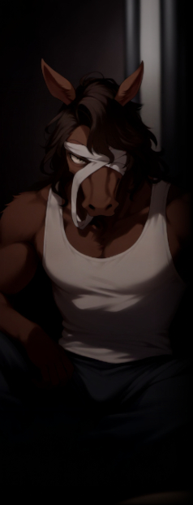
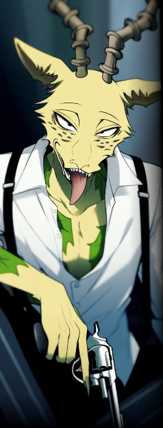

ラグナロク以前から存在し、エクシード差別撤廃の運動を武力闘争で行う過激団体。
キーワードは【差別解放】【革命】。
キーワードは【差別解放】【革命】。
複雑な経緯を辿っている組織で、
「初期：メロンを中心としたギャング活動を含むエクシードの互助団体」→
「中期：ヤフヤを中心とした平和的な政治団体」→
「後期（現在）：ヤフヤ投獄後、エクシード差別に対抗すべく武力闘争を行うテロ団体」
といった風に変遷している。
「初期：メロンを中心としたギャング活動を含むエクシードの互助団体」→
「中期：ヤフヤを中心とした平和的な政治団体」→
「後期（現在）：ヤフヤ投獄後、エクシード差別に対抗すべく武力闘争を行うテロ団体」
といった風に変遷している。
特に異能主義を掲げた【テセウス】のラグナロク敗北、【グングニル】への服従宣言は彼らに大きな衝撃を与え、
これを契機にオルレアン・テセウスとは完全に袂を分かっている。
これを契機にオルレアン・テセウスとは完全に袂を分かっている。
その性質上、参加者の大半はエクシードだが、中でも外見の変化から最も差別を受けやすいトランサーが大部分を占める。
中下層へ落とされたエクシードやその関係者など、上層のノーマル主義下で不当に扱われた者たちも多い。
グングニル下に組み込まれたオルレアンやテセウスの離反者も多く受け入れる一方で、
その逆、つまり活動の先鋭化についていけなくなった者がオルレアン等へ鞍替えするといった現象も起こっている。
中下層へ落とされたエクシードやその関係者など、上層のノーマル主義下で不当に扱われた者たちも多い。
グングニル下に組み込まれたオルレアンやテセウスの離反者も多く受け入れる一方で、
その逆、つまり活動の先鋭化についていけなくなった者がオルレアン等へ鞍替えするといった現象も起こっている。
主な活動内容は現状のノーマル体制と特区エデンの解体を目標としたテロ・ゲリラ。
代表者【ヤフヤ】はグングニルにより投獄されており、彼の解放も当面の目標の一つである。
代表者不在の元、規模だけは拡大し組織の収拾がついていない事や、
一斉摘発を回避するためにそれぞれで潜伏している事などにより、具体的な規模は不明。
監視の厳しい上層やエクシード差別の少ない下層には少なく、中層を活動の拠点とする。
代表者【ヤフヤ】はグングニルにより投獄されており、彼の解放も当面の目標の一つである。
代表者不在の元、規模だけは拡大し組織の収拾がついていない事や、
一斉摘発を回避するためにそれぞれで潜伏している事などにより、具体的な規模は不明。
監視の厳しい上層やエクシード差別の少ない下層には少なく、中層を活動の拠点とする。
シェアワールド原文
ラグナロク以前から存在し、能力者差別撤廃の運動を武力闘争で行う過激団体。キーワードは【差別解放】【革命】
民主機構オルレアン、抑制機構テセウスとは思想の違いにより袂を分かっている。
元々は能力者差別、特に見た目の変化から最も差別されるトランス能力者を主軸に形成された武力行使などはしなかった団体を前進にしているが、
ラグナロク以後、グングニル、ルーン企業連などのノーマルを主に置いた組織がユグドラシルを制御している現状は
ラグナロク以前よりもノーマルと能力者の摩擦が増えており、能力者革命を掲げたテセウスの敗北もあり、武力による過激な革命をする団体へ至った。
現グングニル体制の解体と特区エデンの解体、投獄されている【代表者：ヤフヤ】の解放を軸にゲリラ活動やテロ活動など武力によった革命運動を続けている。
民主機構オルレアン、抑制機構テセウスとは思想の違いにより袂を分かっている。
元々は能力者差別、特に見た目の変化から最も差別されるトランス能力者を主軸に形成された武力行使などはしなかった団体を前進にしているが、
ラグナロク以後、グングニル、ルーン企業連などのノーマルを主に置いた組織がユグドラシルを制御している現状は
ラグナロク以前よりもノーマルと能力者の摩擦が増えており、能力者革命を掲げたテセウスの敗北もあり、武力による過激な革命をする団体へ至った。
現グングニル体制の解体と特区エデンの解体、投獄されている【代表者：ヤフヤ】の解放を軸にゲリラ活動やテロ活動など武力によった革命運動を続けている。
主な参加者は以前から差別対象であったトランス能力者、非差別能力者であるが
上層のノーマル主義の下、中層や下層へ落とされた能力者やその関係者など不当に扱われた能力者も多く参加している。
グングニル下に組み込まれたオルレアンやテセウスの離反者も多く受け入れている。
逆に過激な活動に賛同できなくなった者はオルレアンなどに鞍替えもしている。
上層のノーマル主義の下、中層や下層へ落とされた能力者やその関係者など不当に扱われた能力者も多く参加している。
グングニル下に組み込まれたオルレアンやテセウスの離反者も多く受け入れている。
逆に過激な活動に賛同できなくなった者はオルレアンなどに鞍替えもしている。
代表者は【ヤフヤ】と呼ばれる馬のトランサーであるが、グングニルにより投獄されている。
代表者不在の元、規模だけは拡大し組織の収拾がついていない事や、
一斉摘発を回避するためにそれぞれで潜伏している事などにより、具体的な規模は不明である。
監視の厳しい上層や能力者差別の少ない下層にはおらず、中層に多く存在する。
代表者不在の元、規模だけは拡大し組織の収拾がついていない事や、
一斉摘発を回避するためにそれぞれで潜伏している事などにより、具体的な規模は不明である。
監視の厳しい上層や能力者差別の少ない下層にはおらず、中層に多く存在する。

- 男性
- ５１歳
- 能力タイプ
- トランサー
- 能力名
- 壮獣ビースター
- 一人称
- 僕、私
- 二人称
- 君、○○くん
- 三人称
- ？？？
- ベース
- 穏やか、淡泊、理知的
-
その他
口癖等 -
能力者解放戦線の現代表を務める、ウマのミュータント。
異能【壮獣ビースター】は肉体をウマに変容させるトランサー。異能の副作用で視野が過剰に広くなってしまい、普段は目隠しをしている。
異能【壮獣ビースター】は肉体をウマに変容させるトランサー。異能の副作用で視野が過剰に広くなってしまい、普段は目隠しをしている。
上層の某・公会堂を占拠し、市民やＹＤＦに向けてクーデターを呼びかけるテロ事件を起こしたことで、現在は投獄中。
世間的には優れた文筆家としても知られ、小説から批評文に至るまで多彩な著作を持ち、投獄以前から名の知れた知識人であった。
そのため一般社会にとって彼の逮捕は、「有名作家が政治的テロに走った」という衝撃として受け止められた。
世間的には優れた文筆家としても知られ、小説から批評文に至るまで多彩な著作を持ち、投獄以前から名の知れた知識人であった。
そのため一般社会にとって彼の逮捕は、「有名作家が政治的テロに走った」という衝撃として受け止められた。
「我々は、ただ生き延びるためにここにいるのではない。誇りを持って存在するために、立ち上がるのだ」
「僕たちには神話が必要だ。他の何者にも依らない、このユグドラシルという土地だけに息吹く神話が」
「僕たちには神話が必要だ。他の何者にも依らない、このユグドラシルという土地だけに息吹く神話が」
思想について
収監以前から今現在に至るまで広く誤解されているが、彼の目的は単なる【差別撤廃】ではない。
彼が本質的に問題視していたのは、外界から追放された者たちが集まったユグドラシルという土地が、
なおも外界の価値観――ノーマル中心主義や文化的規範――を模倣し続けていることだった。
彼が本質的に問題視していたのは、外界から追放された者たちが集まったユグドラシルという土地が、
なおも外界の価値観――ノーマル中心主義や文化的規範――を模倣し続けていることだった。
彼は「能力者」という属性を、単なる異能の有無ではなく、
ユグドラシルに流れ着いたすべての被差別者・棄民を包括する概念として捉え直すべきだと考えた。
「能力者」であることを文化的・民族的アイデンティティに昇華することで、
彼らが自らの歴史を肯定し、一つの民族として団結すること――それこそがヤフヤの目指す「解放」であり、「革命」であった。
ユグドラシルに流れ着いたすべての被差別者・棄民を包括する概念として捉え直すべきだと考えた。
「能力者」であることを文化的・民族的アイデンティティに昇華することで、
彼らが自らの歴史を肯定し、一つの民族として団結すること――それこそがヤフヤの目指す「解放」であり、「革命」であった。
しかしその理想は、大衆には難解に過ぎた。
ヤフヤの投獄後の能力者解放戦線には、彼が唱えた「自治」も「文化」も理解できず、「差別が辛いから戦う」という私怨と怒りの集積場に成り下がっていった。
皮肉にもヤフヤの名自体は組織の中で象徴化・神聖化され、今や彼の築こうとした文化の幻影だけが独り歩きしている。
ヤフヤの投獄後の能力者解放戦線には、彼が唱えた「自治」も「文化」も理解できず、「差別が辛いから戦う」という私怨と怒りの集積場に成り下がっていった。
皮肉にもヤフヤの名自体は組織の中で象徴化・神聖化され、今や彼の築こうとした文化の幻影だけが独り歩きしている。
シェアワールド原文
【 タイトル 】ヤフヤ
【 分類 】人物
【 条件 】グングニルに投獄中
【 説明 】
男、51歳
能力……【壮獣ビースター】(トランサー)
馬へのトランス能力
能力者解放戦線の現代表、常に馬人の状態であり、人間体へは戻る事ができない。
広すぎる視野から平素は目隠しをされている。
能力者主義者であり、現在の武力による闘争を推し進めた人物。
ラグナロク以後の活動でグングニルに確保され、現在投獄の身である。
しかし、彼の投獄により、彼は神格化され、能力者解放戦線の活動や思想はさらに活発になった。
【 分類 】人物
【 条件 】グングニルに投獄中
【 説明 】
男、51歳
能力……【壮獣ビースター】(トランサー)
馬へのトランス能力
能力者解放戦線の現代表、常に馬人の状態であり、人間体へは戻る事ができない。
広すぎる視野から平素は目隠しをされている。
能力者主義者であり、現在の武力による闘争を推し進めた人物。
ラグナロク以後の活動でグングニルに確保され、現在投獄の身である。
しかし、彼の投獄により、彼は神格化され、能力者解放戦線の活動や思想はさらに活発になった。

- 男性
-
2097(?)～2142
（享年45歳）
（無戸籍のため、推定） - 能力タイプ
- クリエイター
- 能力名
- 愛の失敗作の復讐
- 一人称
- ？？？
- 二人称
- ？？？
- 三人称
- ？？？
- ベース
- ？？？
-
その他
口癖等 -
血液型はO型
好きな食べ物は特になし（味覚障害の影響）
【能力者解放戦線】の前身団体、【解放前線】の発起人。つまり同組織の始祖にあたる人物である。
ガゼルとヒョウの形質を有する獣人。彼自身は氷を生み出すクリエイターなので、遺伝的なミュータントではないかと推測されている。
とはいえ、メロンは所謂“無戸籍者”であり、どういった経緯を経て誕生・生育した人物なのかはよくわかっていない。
ガゼルとヒョウの形質を有する獣人。彼自身は氷を生み出すクリエイターなので、遺伝的なミュータントではないかと推測されている。
とはいえ、メロンは所謂“無戸籍者”であり、どういった経緯を経て誕生・生育した人物なのかはよくわかっていない。
彼は優秀なエクシードだったが、実力を過信せず、“群れ”となって生きることを心がけた。
下層で生きるミュータントたちを集めて自助グループを結成したのも、
自分一人が暴れるよりも他人と協調することで、強大なうねりを引き起こす事ができるとの哲学からだった。
グループ結成の最終的な目的は、ノーマル社会に対するテロ活動、あるいは被差別者としての利権確保だったようだ。
下層で生きるミュータントたちを集めて自助グループを結成したのも、
自分一人が暴れるよりも他人と協調することで、強大なうねりを引き起こす事ができるとの哲学からだった。
グループ結成の最終的な目的は、ノーマル社会に対するテロ活動、あるいは被差別者としての利権確保だったようだ。
ところが、彼の目論見とは裏腹に結成されたグループは平和的な交渉活動を続けた。
構成員は順調に増加し、組織の主な活動の舞台が中層に移行してなお、武力に訴えることはなかった。
利己的な搾取しか頭にないメロンは、組織の中でかえって立場を悪くしていった。
構成員は順調に増加し、組織の主な活動の舞台が中層に移行してなお、武力に訴えることはなかった。
利己的な搾取しか頭にないメロンは、組織の中でかえって立場を悪くしていった。
結局、【解放前線】は始祖であるはずのメロンを切り捨てた。
これによって彼は絶望したかといえば案外そうではなかったようだ。ただ、もう一度“群れ”を作り直すだけの根気は尽きていた。
間もなく、彼は短絡的な犯罪を繰り返すようになり、最終的にはグニパヘリル街で「ＹＤＦ側の死者１７名」という大惨事を引き起こした挙句、現場で殺害された。
――解放前線が武力革命の路線へ舵を切る事になるのは、皮肉にも彼の死後だった。
これによって彼は絶望したかといえば案外そうではなかったようだ。ただ、もう一度“群れ”を作り直すだけの根気は尽きていた。
間もなく、彼は短絡的な犯罪を繰り返すようになり、最終的にはグニパヘリル街で「ＹＤＦ側の死者１７名」という大惨事を引き起こした挙句、現場で殺害された。
――解放前線が武力革命の路線へ舵を切る事になるのは、皮肉にも彼の死後だった。
「これくらい気にするなよ。バケモン同士だからこそ 助け合いって大事ってコト」
「ヤフヤ。クソカカオの死に様がどうだったらスカっとするか ちょっとお喋りしないか？」
「ヤフヤ。クソカカオの死に様がどうだったらスカっとするか ちょっとお喋りしないか？」
ヤフヤとの関係について
メロンに追放を宣告したのは、他ならぬヤフヤである。
ではそれ以前の二人の関係がどうだったかというと、当初は良好な友人関係であったようだ。
ではそれ以前の二人の関係がどうだったかというと、当初は良好な友人関係であったようだ。
ヤフヤとメロンは、若き日々を共にした「友人」だった。
ヤフヤは中層の良家に育ち、知性と理想に満ちた少年だった。だが彼の思想はあくまで書斎の中の空論であり、現実の泥にまみれた力には遠かった。
だからこそ、法も秩序も意に介さず突き進むメロンの行動力に、ヤフヤはある種の憧れを抱いたのだろう。
ヤフヤは中層の良家に育ち、知性と理想に満ちた少年だった。だが彼の思想はあくまで書斎の中の空論であり、現実の泥にまみれた力には遠かった。
だからこそ、法も秩序も意に介さず突き進むメロンの行動力に、ヤフヤはある種の憧れを抱いたのだろう。
一方でメロンは、ヤフヤを「駒」と見ていた。
世間知らずで無防備な理想主義者。けれどその弁舌と頭脳は“群れ”の旗印として利用するには申し分ない。
だからこそ、あの頃のメロンは気さくにヤフヤに声をかけ、あくまで「友人」として振る舞ったのだ。
世間知らずで無防備な理想主義者。けれどその弁舌と頭脳は“群れ”の旗印として利用するには申し分ない。
だからこそ、あの頃のメロンは気さくにヤフヤに声をかけ、あくまで「友人」として振る舞ったのだ。
だが時が経ち、状況は変わる。ヤフヤの思想は次第に組織内外で求心力を持ち始める。
そして、暴力と利得だけを求めるメロンは組織の空気から浮き始め、ヤフヤもまた、その裏側にある空虚さに気づく。
そうして両者の関係は音もなく終焉を迎え、最終的にヤフヤがメロンを追放、解放戦線の新たな顔となったのだ。
そして、暴力と利得だけを求めるメロンは組織の空気から浮き始め、ヤフヤもまた、その裏側にある空虚さに気づく。
そうして両者の関係は音もなく終焉を迎え、最終的にヤフヤがメロンを追放、解放戦線の新たな顔となったのだ。
さらに月日が経ち、結局ヤフヤは【暴力主義】というメロンと同じ轍を踏んだ。
獄中の今、メロンに対して彼が何を想うかは定かでない。
獄中の今、メロンに対して彼が何を想うかは定かでない。
シェアワールド原文
男性。享年45歳程度（性格な年齢は不明）。
血液型はO型。血統はケニア人。好きな食べ物はない。（肉も草も全て砂と灰の味しかしない）
2███年の東アフリカは砂漠化が著しく進んでいた。
遺伝子改造によって砂漠に適応した獣人となり、生態ごと変化させることで生き延びる人間も存在する。
おそらくはそういった人間がユグドラシルに投獄され、それからメロンが産まれたのだろう。
彼には戸籍すら存在せず、推測の域を出ないが。
血液型はO型。血統はケニア人。好きな食べ物はない。（肉も草も全て砂と灰の味しかしない）
2███年の東アフリカは砂漠化が著しく進んでいた。
遺伝子改造によって砂漠に適応した獣人となり、生態ごと変化させることで生き延びる人間も存在する。
おそらくはそういった人間がユグドラシルに投獄され、それからメロンが産まれたのだろう。
彼には戸籍すら存在せず、推測の域を出ないが。
メロンは幼少期から強力な能力を持っていることを自覚していたが、自分という"個"の力を過信する事は決してしなかった。
自分一人が暴れるよりも、他人と協調し、群となることでどこまでも強大な存在となる。そういった生き方を心がけた。
自分一人が暴れるよりも、他人と協調し、群となることでどこまでも強大な存在となる。そういった生き方を心がけた。
下層には彼のみならず、獣人、ミュータント、制御異常に陥ったトランサーのような異形の人間が少なくなかった。
それらを集めたメロンは【解放前線】という自助グループを結成。
構成員の増加は、次第に差別が下層よりも激しい中層へと波及してゆく。
なおかつ、構成員のほぼ全員が能力者で構成されているにも関わらず、武力でゴリ押しする"交渉"は行わない平和的団体であり続けた。
それらを集めたメロンは【解放前線】という自助グループを結成。
構成員の増加は、次第に差別が下層よりも激しい中層へと波及してゆく。
なおかつ、構成員のほぼ全員が能力者で構成されているにも関わらず、武力でゴリ押しする"交渉"は行わない平和的団体であり続けた。
しかし、それはメロンが望んだ組織ではなかった。
メロンが実現したかったものは、被差別対象である事を利用したエセ同和行為による利益。
または異形達の総戦力を活かした”健常者”へのテロリズムだった。
その醜悪な本性は次第に露呈していき、【解放前線】は中層での活動を主にする変針と同時にメロンを切り捨てた。
メロンが実現したかったものは、被差別対象である事を利用したエセ同和行為による利益。
または異形達の総戦力を活かした”健常者”へのテロリズムだった。
その醜悪な本性は次第に露呈していき、【解放前線】は中層での活動を主にする変針と同時にメロンを切り捨てた。
その後のメロンは、再起しようとした訳でも、絶望した訳でもない。
ただ、他者と折り合いをつけて生きる気概を失った。
幼少期から隠し続けていた世界への悪意を発散し続け、最期はグニパヘリル街で能力テロを起こし、YDF側に17名の死者を出した後殺害された。
ただ、他者と折り合いをつけて生きる気概を失った。
幼少期から隠し続けていた世界への悪意を発散し続け、最期はグニパヘリル街で能力テロを起こし、YDF側に17名の死者を出した後殺害された。
尚、メロンが追放された後も、彼の過激な思想自体は受け継ぐ者がいくらか居た。
その中には幹部であり、知己であり、メロンが持っていなかった”カリスマ”を持つ獣人【ヤフヤ】が居た。
彼は代表の座を継ぎ、やがて組織の名前を【能力者解放戦線】と改めることになる。
その中には幹部であり、知己であり、メロンが持っていなかった”カリスマ”を持つ獣人【ヤフヤ】が居た。
彼は代表の座を継ぎ、やがて組織の名前を【能力者解放戦線】と改めることになる。
能力……【愛の失敗作の復讐】(クリエイター)
「氷」を創り出す能力。
甲殻類のような形状を生み出すのが得意だったという。
PSY因子がたっぷりと含まれた氷鎧の強度は金属をも超え、尽くを抉り、あらゆる弾丸を弾く。
テロリストとして頭角を表した彼を、YDFは早々に〔クラス：ハイマテリアル〕のエクシードと見積もった。
「氷」を創り出す能力。
甲殻類のような形状を生み出すのが得意だったという。
PSY因子がたっぷりと含まれた氷鎧の強度は金属をも超え、尽くを抉り、あらゆる弾丸を弾く。
テロリストとして頭角を表した彼を、YDFは早々に〔クラス：ハイマテリアル〕のエクシードと見積もった。